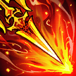
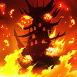
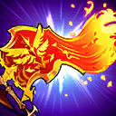

Chi tiết cập nhật 26/11
Bael mới ra mắt, Fai thức tỉnh, chế độ PvE roguelite mới Corridor, Melia được cân bằng lại, tính năng Auto Enhance & Auto Fusion và loạt gói kỷ niệm 1.5 năm — bản dịch đầy đủ từ thông báo chính thức trên forum.
Bài dịch từ thông báo chính thức "11/25 (Wed) Update Details" trên forum Seven Knights Re:BIRTH. Tên Hero, tên kỹ năng và tên hiệu ứng giữ nguyên tiếng Anh. Chi tiết kỹ năng có thể thay đổi. Ảnh và video trong thông báo gốc được chụp từ bản thử nghiệm, hiển thị bằng tiếng Hàn, bản cập nhật thực tế áp theo từng ngôn ngữ. Bản cập nhật lên sóng sau bảo trì ngày 26/11 (bảo trì từ 04:00 đến 10:00 giờ Việt Nam).
Tóm tắt nhanh:
- Bael ra mắt cùng bản Thức tỉnh
- Fai thức tỉnh, nội tại đổi tên thành Eternal Flame
- Corridor — chế độ PvE roguelite mới, mở sau Adventure (Normal) 9-10
- Melia được cân bằng lại: điều kiện Magic Bond, Counterattack, Fixed HP
- Auto Enhance và Auto Fusion — nâng cấp và dung hợp tự động
- Event Arena mùa mới cấm tướng Legendary (Special), từ 26/11 đến 10/12
- Total War cải tiến màn hình chính, Round Reward tự nhận khi vào
Tướng mới & Thức tỉnh
[Legendary] Bael — Tướng mới
Tướng mới [Legendary] Bael sẽ được thêm vào game, thuộc phe Apostles of the Abyss, vai trò Magic.
Trang bị chuyên dụng (Dedicated Equipment) của Bael, 'Bael's Proof of Submission', sẽ được thêm vào game.
Bài này chỉ trình bày chi tiết kỹ năng của Bael bản Thức tỉnh, không trình bày chi tiết kỹ năng của Bael bản 6★ thường. Bản 6★ thường có cùng bộ kỹ năng với số thấp hơn: đánh thường 100% Magic Attack (cường hóa tối đa 120%), Skill 1 87% (cường hóa tối đa 105%), Skill 2 80% với Paralysis 45% (cường hóa thêm Pierce), hồi sinh với 80% HP và Effect Resist Reduction 28%.
[Legendary] Bael — Tướng Thức tỉnh mới
Tướng Thức tỉnh mới [Legendary] Bael sẽ được thêm vào game.
| Tên | Bael | Bậc | Legendary |
|---|---|---|---|
| Thuộc phe | Apostles of the Abyss | Vai trò | Magic |
Kỹ năng Bael — bản Thức tỉnh
Tấn công thường
Basic AttackGây sát thương bằng 130% Magic Attack, 1 lần. 100% gây 1 cộng dồn Mark: Skein (tối đa 2 cộng dồn, chỉ khi triển khai trong đội có từ 3 tướng Magic trở lên).
Khi Mark: Skein đạt 2 cộng dồn: mục tiêu chịu Buff Duration Reduction 1 lượt và nhận thêm sát thương cố định (Fixed damage) bằng 20% Attack của người dùng; bản thân nhận 1 cộng dồn tăng 15% Magic Attack (tối đa 8 cộng dồn).
Queen of Silver
Skill 1Gây sát thương Xuyên giáp (Piercing) bằng 105% Magic Attack, 2 lần. 100% gây 1 cộng dồn Mark: Skein (tối đa 2 cộng dồn, chỉ khi triển khai trong đội có từ 3 tướng Magic trở lên).
Night's Lament
Skill 2Gây sát thương Xuyên giáp (Piercing) bằng 95% Magic Attack, 2 lần.
55% gây Paralysis, 2 lượt.
100% gây 1 cộng dồn Mark: Skein (tối đa 2 cộng dồn, chỉ khi triển khai trong đội có từ 3 tướng Magic trở lên).
Spider Queen's Curse
PassiveNhận Camouflage, 2 lượt: không thể trở thành mục tiêu của đòn tấn công đơn mục tiêu.
Hồi sinh với 100% HP khi gục trong trận, 1 lần mỗi trận. Nhận All Damage Nullification khi hồi sinh, trong một số đòn nhất định (4 đòn).
Nhận 1 Magic Cocoon khi bị địch tấn công trúng, 3 lượt. Khi có đủ 3 Magic Cocoon, tiêu hao toàn bộ để nhận All Damage Nullification (4 đòn) và All Crowd Control Removal (xóa mọi hiệu ứng khống chế trên bản thân).
Chịu Effect Resist Reduction, luôn kích hoạt: giảm Effect Resistance đi 34%.
Kích hoạt Night's Lament khi 4 địch gục trong trận, 1 lần mỗi trận: gây sát thương Xuyên giáp bằng 95% Magic Attack, 2 lần; 55% gây Paralysis, 2 lượt; 100% gây 1 cộng dồn Mark: Skein.
Kỹ năng kích hoạt theo cách này được tính riêng với kỹ năng gốc.
Hồi HP bằng 30% Magic Attack của người dùng mỗi khi một đồng minh dùng kỹ năng đủ 2 lần.
Abyssal Dreamcatcher
Awakened SkillGây sát thương bằng 107% (97% cơ bản) Magic Attack, 2 lần. Mỗi đòn đánh có 100% gây 1 cộng dồn Mark: Skein (tối đa 2 cộng dồn, chỉ khi triển khai trong đội có từ 3 tướng Magic trở lên).
Tăng sát thương lên 107% Magic Attack.
*Chi tiết kỹ năng có thể thay đổi. Phần trên được viết dựa trên kỹ năng Thức tỉnh.*
Bael được thêm vào các nội dung & kho đồ
Tướng [Legendary] Bael sẽ được thêm vào:
| Nội dung và vật phẩm | Tướng |
|---|---|
| Danh sách tướng [Legendary] nhận được làm thưởng sau Giai đoạn 2 của Repeat Battle Stages (Ruby Farming) | Bael |
| Danh sách Fusion tướng 3★–5★ | Bael |
| Random Crafting | Bael |
| Hero Codex | Bael |
| Profile Portrait | Bael |
| Mercure's Lab | Bael |
Bael sẽ được thêm vào các Selector và Ticket:
| Selector/Ticket | Tướng |
|---|---|
| Tower of Trials Hero Ticket | Bael |
| Tower of Trials Hero Ticket II | Bael |
| Legendary Hero Selector | Bael |
| Legendary Hero Ticket II | Bael |
| Rare – Legendary Hero Ticket II | Bael |
| Legendary Hero Selector II | Bael |
| Legendary Hero Ticket III | Bael |
Trang bị chuyên dụng 'Bael's Proof of Submission' sẽ được thêm vào: Dedicated Equipment Wish List Summon, Dedicated Equipment Selection Box, Dedicated Equipment Box, Dedicated Equipment Box I và Dedicated Magic Hero Equipment Selection Box.
Judas và Eve sẽ được thêm vào Hero Summon & Wish List, Fixed Crafting và 7K Chess.
[Legendary] Fai — Tướng Thức tỉnh mới
Tướng Thức tỉnh mới [Legendary] Fai sẽ được thêm vào game.
| Tên | Fai | Bậc | Legendary |
|---|---|---|---|
| Thuộc phe | Seven Knights of Old | Vai trò | Attack |
Kỹ năng Fai — bản Thức tỉnh
Tấn công thường
Basic AttackGây sát thương bằng 130% Physical Attack, 1 lần. Gây thêm sát thương bằng 70% Physical Attack lên mục tiêu đang chịu Burn.
40% gây Crimson Blaze, 2 lượt.

Spear of Agnia
Skill 1Mỗi đòn đánh có 70% gây Crimson Blaze, 2 lượt.
Gây sát thương bằng 75% Physical Attack, 2 lần. Mỗi đòn đánh gây thêm sát thương bằng 35% Physical Attack lên mục tiêu đang chịu Burn.
100% gây Defense Reduction, 3 lượt.

Flame Dragon's Greetings
Skill 2100% gây 3 lần Buff Removal (xóa buff theo thứ tự được áp dụng; không xóa được Damage Immunity, Damage Nullification và Guts).
100% gây Crimson Blaze, 3 lượt.
Gây sát thương Xuyên giáp (Piercing) bằng 410% Physical Attack cộng thêm 26% Max HP của mục tiêu, 1 lần. Sát thương theo HP bị giới hạn ở 450% Attack của người dùng.
Gây thêm sát thương Xuyên giáp bằng 70% Physical Attack lên mục tiêu đang chịu Burn.
Kết liễu (Execution) ngay lập tức địch có HP từ 24% trở xuống. Reset hồi chiêu của Flame Dragon's Greetings khi hạ gục một địch bằng sát thương từ kỹ năng này.
60% gây Crimson Blaze, 2 lượt.
Gây sát thương Xuyên giáp bằng 150% Physical Attack cộng thêm 18% Max HP của mục tiêu, 1 lần. Sát thương theo HP bị giới hạn ở 150% Attack của người dùng.
Gây thêm sát thương Xuyên giáp bằng 70% Physical Attack lên mục tiêu đang chịu Burn.

Eternal Flame
PassiveChịu Physical Vulnerability, luôn kích hoạt: tăng sát thương Vật lý nhận vào thêm 20% (17% cơ bản).
Nhận Defense Ignore Efficiency Boost, luôn kích hoạt: mọi sát thương bỏ qua 10% Defense của mục tiêu.
Bắt đầu trận với ít nhất 3 tướng Attack trong đội sẽ nhận All Damage Nullification, trong một số đòn nhất định (3 đòn). Tăng số đòn của All Damage Nullification thêm 1 đòn mỗi khi một đồng minh hoặc kẻ địch gục trong trận, tối đa 6 lần (chỉ khi triển khai trong đội có từ 3 tướng Attack trở lên).
Hồi sinh với 100% (80% cơ bản) HP khi gục trong trận, 1 lần mỗi trận.
Nhận All Damage Nullification khi hồi sinh, trong một số đòn nhất định (3 đòn), 1 lần mỗi trận (chỉ khi triển khai trong đội có từ 3 tướng Attack trở lên).
Awakening Gauge Boost tăng lên 180 khi kích hoạt Hồi sinh.
Nhận Effect Probability Boost, luôn kích hoạt: tăng Effect Probability thêm 26%.
Nhận Effect Hit Rate Boost, luôn kích hoạt: tăng Effect Hit Rate thêm 49%.
Land Ablaze
Awakened Skill100% gây 2 lần Buff Removal (xóa buff theo thứ tự được áp dụng; không xóa được Damage Immunity, Damage Nullification và Guts).
Mỗi đòn đánh có 100% gây Crimson Blaze, 2 lượt.
Gây sát thương Xuyên giáp (Piercing) bằng 90% Physical Attack cộng thêm 9% Max HP của mục tiêu, 2 lần. Sát thương theo HP bị giới hạn ở 100% Attack của người dùng.
Sát thương tăng tối đa 50%, tỉ lệ với HP hiện tại của mục tiêu.
Mỗi đòn đánh gây thêm sát thương Xuyên giáp bằng 35% Physical Attack lên mục tiêu đang chịu Burn.
Thêm hiệu ứng: bỏ qua 65% Defense của mục tiêu.
*Chi tiết kỹ năng có thể thay đổi. Phần trên được viết dựa trên kỹ năng Thức tỉnh.*
Cân bằng tướng (Hero Balance Adjustment)
[Legendary] Fai
Thay đổi sau điều chỉnh:
- Flame Dragon's Greetings: sát thương thành Xuyên giáp (Piercing). Thêm sát thương Xuyên giáp bằng 70% Physical Attack lên mục tiêu đang chịu Burn, cả mục tiêu chính và địch cùng hàng. Thêm reset hồi chiêu của Flame Dragon's Greetings khi hạ gục một địch bằng sát thương từ kỹ năng này. Hiệu ứng Burn đổi thành Crimson Blaze (sát thương mỗi lượt bằng 120% Attack, thay vì 80% của Burn cũ).
- Eternal Flame (nội tại, tên cũ Surging Flames): mới — toàn bộ đồng minh nhận Defense Ignore Efficiency Boost, luôn kích hoạt: mọi sát thương bỏ qua 10% Defense của mục tiêu. Mới — bắt đầu trận với ít nhất 3 tướng Attack trong đội sẽ nhận All Damage Nullification (3 đòn), tăng thêm 1 đòn mỗi khi một đồng minh hoặc kẻ địch gục (tối đa 6 lần). Mới — nhận All Damage Nullification (3 đòn) khi hồi sinh. Mới — nhận Effect Probability Boost +26% và Effect Hit Rate Boost +40% (bản Thức tỉnh +49%), luôn kích hoạt.
- Tên kỹ năng nội tại của Fai từ 4★ đến Thức tỉnh đổi từ 'Surging Flames' thành 'Eternal Flame'.
Toàn bộ nội tại sau điều chỉnh (bản Thức tỉnh): xem mục Eternal Flame ở phần Fai Thức tỉnh phía trên.
[Legendary] Melia
Thay đổi sau điều chỉnh:
- Điều kiện Magic Bond đổi cách ghi thành "đội có từ 3 tướng Magic trở lên", không còn chia theo mốc 3/4/5 mục tiêu như trước.
- Tấn công thường: 30% gây Crystal Cluster nay áp dụng luôn, không còn cần đủ điều kiện Magic Bond 3 mục tiêu.
- Crystal Dragon's Mirrors: 50% gây Crystal Cluster nay áp dụng luôn. Mới ở T2: Crystal Resonance giảm số đòn chịu thêm từ 4 lên 5.
- Crystalline Breath: tăng từ 2 lên 3 đòn. Mỗi đòn đánh có 35% gây Crystal Cluster nay áp dụng luôn, không còn cần đủ điều kiện Magic Bond 3 mục tiêu.
- Glittering Crystal Scales (nội tại): miễn nhiễm Crowd Control 3 lượt nay đi kèm Fixed HP 2 lượt khi đội có từ 3 tướng Magic trở lên (trước đây chỉ miễn nhiễm Crowd Control khi đủ Magic Bond 4 mục tiêu). Mới: 38% Phản công (Counterattack), luôn kích hoạt. Mới: toàn bộ đồng minh nhận Incoming Barrier Boost +22%, luôn kích hoạt. Barrier cho đồng minh Magic mỗi khi tấn công nay chỉ cần đội có từ 3 tướng Magic trở lên (trước đây cần Magic Bond 5 mục tiêu). Mới: khi bản thân phản công, gây sát thương lên 2 địch bằng 30% Magic Attack cộng 35% Defense, 1 lần, kèm 30% gây Crystal Cluster (đội 3+ Magic).
Toàn bộ nội tại sau điều chỉnh:
Glittering Crystal Scales
PassiveNhận Physical Enhancement - Crystal Dragon, luôn kích hoạt: tăng Defense và HP cơ bản của Melia.
Hồi sinh với 80% HP khi gục trong trận, 1 lần mỗi trận.
Nhận Crowd Control Immunity, 3 lượt (chỉ khi triển khai trong đội có từ 3 tướng Magic trở lên).
Nhận Fixed HP, 2 lượt (chỉ khi triển khai trong đội có từ 3 tướng Magic trở lên): HP được cố định ở giá trị hiện tại, không bị ảnh hưởng bởi hiệu ứng sát thương hoặc hồi máu.
38% Phản công (Counterattack), luôn kích hoạt.
Nhận Incoming Barrier Boost, luôn kích hoạt: tăng lượng khiên (Barrier) nhận vào thêm 22%.
Nhận Barrier bằng 45% Defense của người dùng mỗi khi dùng bất kỳ đòn tấn công nào 1 lần, 2 lượt (chỉ khi triển khai trong đội có từ 3 tướng Magic trở lên).
Chịu Magic Vulnerability, luôn kích hoạt: tăng sát thương Phép nhận vào thêm 17%.
Gây sát thương bằng 30% Magic Attack cộng 35% Defense, 1 lần.
30% gây Crystal Cluster (chỉ khi triển khai trong đội có từ 3 tướng Magic trở lên).
Tăng HP hồi khi hồi sinh lên 100%. Tăng Magic Vulnerability lên 20%. Tăng tỉ lệ Crystal Cluster lên 35%.
*Chi tiết kỹ năng có thể thay đổi. Phần trên được viết dựa trên 6★.*
Nội dung mới (New Content)
Story Event mới: [To Become a Star in a Collapsing World]
- Story Event mới trong thời gian sự kiện. Qua sự kiện này, bạn có thể khám phá cốt truyện mới của các tướng mới ra mắt.
- Hoàn thành ải [Story] và [Challenge A], [Challenge B] sẽ nhận được tiền tệ sự kiện để dùng trong Event Shop.
- Chi tiết thêm sẽ được thông báo riêng.
- Sự kiện mở khi hoàn thành Adventure [2-5].
- Ở ải [Story], bạn có thể thưởng thức cốt truyện mà không cần chiến đấu.
Trang phục mới (New Costume)
Trang phục mới của Bael, Hayeon và Rin sẽ được thêm vào game.
[Bael] Widow Bunny (Rare): nhận được khi mua gói điều kiện Widow Bunny Bael Special Pack. Mỗi tài khoản chỉ mua được 1 lần. Gói sẽ được gửi vào hộp thư sau khi mua. Mở từ 26/11 (thứ Năm) sau bảo trì đến trước bảo trì 24/12 (thứ Năm), UTC+0.
[Hayeon] Eternal Vow (Rare): nhận được khi mua gói 1.5th Anniversary Eternal Vow Hayeon Special Pack II trong [Premium Shop] → [Special]. Mỗi tài khoản chỉ mua được 1 lần. Gói sẽ được gửi vào hộp thư sau khi mua. Mở từ 26/11 (thứ Năm) sau bảo trì đến 23/12 (thứ Tư) 20:00 (UTC+0).
[Rin] Moonlit Romance (Rare): mua được ở tab [1.5th Anniversary Festival] trong [Exchange Shop]. Vật phẩm được nhận ngay khi mua.
Chế độ PvE Roguelite mới: Corridor
Nội dung [Roguelite PvE: Corridor] mới sẽ được thêm vào game. Vào qua [Battle Lobby] → [Infinite Tower] → [Corridor] hoặc biểu tượng [Corridor] trong [Content Dashboard].
- Mở khóa: hoàn thành Adventure (Normal) Stage 9-10.
- Thời gian còn lại của mùa hiện tại hiển thị trên biểu tượng Corridor ở menu Infinite Tower và Content Dashboard.
- Corridor chạy theo chu kỳ mùa 28 ngày, không thể vào trong thời gian Rest và Season Preparation.
- Khi mùa kết thúc, run đang chơi sẽ bị xóa, toàn bộ dữ liệu liên quan đến mùa sẽ reset, thưởng chưa nhận được gửi vào hộp thư (lưu trong hộp thư 3 ngày).
- Một mùa chạy từ ngày 1 đến ngày 27, tính điểm mùa vào ngày 28.
| Mục | Chi tiết |
|---|---|
| Giữ lại khi hết mùa | Clear Info, Unlocked Difficulties, Achievement Missions, Current Season Ranking, Codex, Basic Growth |
| Reset khi hết mùa | Run Info, Season Missions, Exploration Points, Season Growth |
| Xóa khi hết mùa | Previous Ranking |
Xếp hạng: bảng 'Current Season' xếp theo Corridor Clear Score, hiển thị tới Top 20, cập nhật theo thời gian thực. Bảng 'Previous Season' hiển thị xếp hạng ghi nhận cuối mùa trước — sau bảo trì 26/11 sẽ chưa hiển thị gì ở bảng này, bắt đầu hiển thị từ mùa sau. Nếu mùa kết thúc hoặc chuyển mùa trong lúc bạn đang ở trong Corridor, cửa sổ 'Season Change' sẽ hiện ra và bạn được đưa về Lobby.
Khi vào Corridor, menu bên trái hiển thị các loại Corridor, bạn đặt độ khó cho từng loại. Sau khi chọn độ khó và vào, cửa sổ [Select Destiny] hiện ra để chọn 1 trong 4 hiệu ứng Destiny. Sau khi chọn hiệu ứng và vào, bạn không thể đổi loại Corridor, độ khó hay Destiny cho tới khi run kết thúc.
4 Destiny (Fate)
| Destiny | Hiệu ứng cơ bản | Synergy 1 → Synergy 2 |
|---|---|---|
| Pulverize | Khi đánh Crit, bản thân nhận 1 cộng dồn Bloodlust; khi đánh Weakness Hit, bản thân nhận 1 cộng dồn Seize (tối đa 50 cộng dồn mỗi loại). Toàn bộ đồng minh nhận Crit Rate +25%, luôn kích hoạt. | Synergy 1: sát thương mỗi cộng dồn Bloodlust và Seize từ 5% lên 10% (áp dụng cả cho Cards); toàn bộ đồng minh nhận Weakness Hit Chance +25%, luôn kích hoạt; đánh Crit nhận 3 Bloodlust, đánh Weakness Hit nhận 3 Seize. Synergy 2: đầu trận, toàn bộ đồng minh nhận 10 Bloodlust và 10 Seize; đồng minh dùng kỹ năng 2 lần sẽ giảm Defense của toàn bộ địch đi 50%, 3 lượt. |
| Safeguard | Khi chịu Block 1 lần, bản thân nhận 1 cộng dồn Counter-Shock Aura III. Khi một đồng minh chịu Block 1 lần, gây 1.000 Fixed Damage lên toàn bộ địch (số Block được đếm riêng theo từng tướng). Toàn bộ đồng minh tăng Block Rate 25%. | Synergy 1: khi đang có Counter-Shock Aura, chịu Barrier hit 2 lần sẽ nhận thêm 1 Counter-Shock Aura III; chịu Barrier hit 2 lần gây 5.000 Fixed Damage lên toàn bộ địch; hồi HP bằng 75% Defense khi chịu Barrier hit 2 lần; Fixed Damage từ Block hit tăng từ 1.000 lên 5.000. Synergy 2: Fixed Damage từ Block hit tăng từ 5.000 lên 15.000; từ Barrier hit tăng từ 5.000 lên 15.000; hồi HP từ Barrier hit tăng từ 75% lên 100% Defense. |
| Pestilence | Toàn bộ đồng minh tăng Continuous Damage 80% và All Attack 10%. Khi dùng kỹ năng, mỗi loại Burn, Bleed, Poison có 20% gây lên 1 địch có từ 3 hiệu ứng Continuous Damage trở lên, 5 lượt. | Synergy 1: toàn bộ đồng minh tăng Continuous Damage Probability 15%; toàn bộ địch chịu Continuous Damage tăng 30%, gây sát thương giảm 30%, Defense giảm 30%, luôn kích hoạt; khi bản thân dùng kỹ năng, kích nổ 10 hiệu ứng Continuous Damage trên toàn bộ địch có từ 30 hiệu ứng trở lên; nhận Barrier bằng 75% Attack khi dùng kỹ năng 1 lần, 5 lượt. Synergy 2: toàn bộ đồng minh tăng Continuous Damage lên 140% và Continuous Damage Probability lên 30%; địch chịu Continuous Damage tăng 60%, gây sát thương giảm 40%; khi dùng kỹ năng, toàn bộ hiệu ứng Continuous Damage trên địch có từ 30 hiệu ứng trở lên chuyển thành Explosion (sức mạnh 200%); Barrier tăng từ 75% lên 100% Attack. |
| Strike | Toàn bộ đồng minh tăng sát thương đòn đơn mục tiêu 60%, Crit Damage 25%, Crit Rate và Weakness Hit Chance 15%, luôn kích hoạt. Gây 10% Joint Liability lên toàn bộ địch (100%, luôn kích hoạt). Sau 3 đòn tấn công của bản thân, nhận Barrier bằng 50% Attack, 5 lượt, và hồi HP bằng 50% Attack. | Synergy 1: Joint Liability tăng từ 10% lên 50%; toàn bộ đồng minh có 40% tỉ lệ Cover, luôn kích hoạt; sau 7 đòn tấn công thường, áp lại Joint Liability lên toàn bộ địch; Crit Damage toàn đội tăng lên 95%, Crit Rate và Weakness Hit Chance lên 25%; sau 3 đòn tấn công, Barrier bằng 150% Attack và hồi HP bằng 150% Attack. Synergy 2: tỉ lệ Cover tăng lên 60%; sát thương đơn mục tiêu tăng lên 100%, Crit Damage 175%, Crit Rate và Weakness Hit Chance 50%; Joint Liability tăng lên 75%; đồng minh tăng Basic Attack Damage 40%, luôn kích hoạt; sau 3 đòn tấn công, Barrier bằng 175% Attack và hồi HP bằng 175% Attack. |
Hiệu ứng Synergy 1–2 được áp dụng khi bạn thu thập đủ số lượng 'Destiny Card' nhất định trong run, và duy trì tới khi run kết thúc. Hiệu ứng chi tiết của 'Cards' xem trong game.
| Hiệu ứng | Chi tiết |
|---|---|
| Bloodlust | Tăng Crit Damage 5% mỗi cộng dồn. |
| Seize | Tăng Weakness Hit Damage 5% mỗi cộng dồn. |
| Counter-Shock Aura | Tăng Fixed Damage gây ra. Có 4 bậc: Tier III → Tier II → Tier I → Apex. Ban đầu nhận Counter-Shock Aura III; thu thập đủ số lượng cùng bậc sẽ nâng lên 1 bậc tiếp theo, và cộng dồn sát thương khi giữ nhiều bậc. |
| Counter-Shock Aura III | Tăng Fixed Damage gây ra thêm 2.500; thu thập 2 sẽ nâng lên Counter-Shock Aura II. |
| Counter-Shock Aura II | Tăng Fixed Damage gây ra thêm 7.500; thu thập 3 sẽ nâng lên Counter-Shock Aura I. |
| Counter-Shock Aura I | Tăng Fixed Damage gây ra thêm 30.000; thu thập 3 sẽ nâng lên Counter-Shock Aura: Apex. |
| Counter-Shock Aura: Apex | Tăng Fixed Damage gây ra thêm 100.000. |
| Joint Liability | Khi một mục tiêu mang Joint Liability chịu đòn tấn công trực tiếp, các mục tiêu khác mang Joint Liability cũng chịu sát thương bằng một tỉ lệ nhất định của sát thương đó. |
Bản đồ Node và cách chơi
- Sau khi chọn Destiny và vào Corridor, một bản đồ Node được tạo ra với các biểu tượng Battle, Merchant, Regroup, Incident, Heal và Random trên từng Node.
- Chọn một Node có thể tới trên bản đồ sẽ di chuyển ngay tới Node đó và kích hoạt sự kiện theo loại Node. Hoàn thành sự kiện ở Node hiện tại mới được đi tiếp Node sau.
- Chỉ di chuyển được tới các Node kề nhau ở bước ngay sau, và chọn Node loại Battle sẽ đưa tới màn hình xếp đội hình.
- Node ngay sau Node bắt đầu luôn là Node Battle.
- Nút [Heroes] ở góc dưới trái màn hình bản đồ Node cho xem các tướng dùng được trong run hiện tại. Nếu bạn không sở hữu tướng đó, tướng sẽ hiển thị ở cuối danh sách. Danh sách này chỉ hiện sau lần xếp đội hình đầu tiên; kiểm tra trước khi xếp đội lần đầu sẽ không thấy tướng nào.
- Nút [Inventory] ở góc dưới trái màn hình bản đồ Node cho xem 'Cards', 'Curio' và 'Destiny' đã thu thập trong run hiện tại.
- Bạn có thể kết thúc run sớm bằng nút [Stop Challenge] ở góc dưới phải bản đồ Node. Khi dừng, thưởng được phát dựa trên tiến độ đã đạt.
| Loại Node | Sự kiện |
|---|---|
| Battle | Trận Normal, Formidable Foe và Boss |
| Merchant | Mua tiền tệ và vật phẩm dùng trong Corridor |
| Regroup | Chọn 1 trong: Enhance Cards hoặc Recruit Heroes |
| Incident | Nhận kết quả qua lựa chọn |
| Heal | Chọn 1 trong: Heal Heroes hoặc Revive Heroes |
| Random | Kích hoạt ngẫu nhiên một sự kiện từ các Special Node (có thể không xuất hiện sự kiện) |
Đội hình và HP trong Corridor
- Khi xếp đội sau khi vào sự kiện Battle qua Node Battle, các tướng có thể triển khai hiển thị ở cuối màn hình kèm HP hiện tại (%) của từng tướng.
- Tướng dùng trong Corridor giữ nguyên tiến độ tăng trưởng của tướng bạn sở hữu, còn trang bị đã mặc sẽ không được áp dụng.
- Đội hình xếp ở sự kiện Battle đầu tiên được giữ nguyên tới khi run hiện tại kết thúc, và có thể đổi với các tướng tuyển mộ thêm khi đi tiếp trong Corridor.
- Các tướng khác bạn sở hữu nhưng không dùng trong lần xếp đội đầu tiên sẽ không thể triển khai sau đó, và tướng tuyển mộ được qua Node Regroup chỉ giới hạn trong các tướng bạn đang sở hữu.
- HP hiện tại hiển thị trong danh sách tướng được áp dụng khi vào trận, và HP còn lại sau trận cũng được phản ánh lại vào danh sách.
- Nếu một tướng chết trong trận, HP của tướng đó hiển thị 0% trong danh sách, và tướng 0% HP không thể xếp vào đội. Tướng 0% HP có thể hồi sinh qua sự kiện Revive Heroes ở Node Heal, hồi sinh với 50% HP.
- Nếu bỏ cuộc (forfeit) trong sự kiện Battle, HP hiện tại giảm đi 50%. Ví dụ: triển khai tướng có 50% HP rồi bỏ cuộc, HP của tướng đó giảm còn 25%.
Growth, Exploration Points, Missions và Codex
- Tiến triển 'Season Growth' và 'Default Growth' qua nút [Growth] trên màn hình Corridor. Khi một hiệu ứng đạt cấp cường hóa tối đa, hiệu ứng tiếp theo sẽ mở khóa.
- Season Growth: cường hóa từng hiệu ứng bằng tiền tệ 'Echo of Memories', reset khi hết mùa.
- Default Growth: cường hóa từng hiệu ứng bằng tiền tệ 'Traces of Memories', giữ lại bất kể mùa nào.
- Tiền tệ 'Echo of Memories' và 'Traces of Memories' nhận được qua tiến trình Corridor và thưởng Season & Achievement Mission.
- Hoàn thành một run Corridor sẽ nhận Exploration Points dựa trên số Node đã hoàn thành, và cũng nhận được khi run kết thúc bằng Stop Challenge hoặc khi toàn bộ tướng gục. Không nhận Exploration Points nếu dừng thử thách ngay tại Node bắt đầu.
- Thưởng mốc (Milestone) theo Exploration Points đã kiếm được, nhận thưởng tương ứng khi đạt từng mốc. Khi mùa kết thúc, Exploration Points và lịch sử thưởng sẽ reset. Thưởng chưa nhận khi hết mùa sẽ gửi vào hộp thư, nhưng tiền tệ Season Growth sẽ không được phát.
- [Missions] trong Corridor chia thành 'Season' và 'Achievements', nhận thưởng khi hoàn thành từng nhiệm vụ. Tiến độ Season Mission reset khi mùa mới bắt đầu, tiến độ Achievement Mission không reset. Mỗi thưởng trong Achievement Mission chỉ nhận được 1 lần mỗi tài khoản. Thưởng chưa nhận khi hết mùa sẽ gửi vào hộp thư, nhưng tiền tệ Season Growth sẽ không được phát.
- Mục [Content] sẽ được thêm vào [Codex], nơi bạn xem được 'Card Codex', 'Curio Codex' và 'Incident Codex'. Vào từng Codex sẽ xem được hồ sơ Cards, Curios và Incidents đã thu thập khi chơi Corridor. Mục [Content] trong [Codex] chỉ hiện khi Corridor đã mở khóa; nếu đang khóa, cả hai tab Default/Content đều không hiển thị.
Hướng dẫn chi tiết: xem trang Corridor – Chế độ PvE Roguelite mới để biết cách chọn Destiny, đi Node, dùng Card và nhận thưởng mùa.
Vật phẩm giới hạn thời gian 'Dedicated Skill Enhancement Stone'
- Dedicated Skill Enhancement Stones, chỉ dùng được cho tướng hoặc Pet cụ thể, sẽ được thêm vào game. Biểu tượng của tướng hoặc Pet tương ứng hiển thị ở góc trên phải của biểu tượng 'Dedicated Skill Enhancement Stone'.
- Khi cường hóa kỹ năng, 'Dedicated Skill Enhancement Stones' được dùng trước 'Skill Enhancement Stones' và 'Brilliant Skill Enhancement Stones'. Khi đã dùng hết 'Dedicated Skill Enhancement Stones', 'Skill Enhancement Stones' và 'Brilliant Skill Enhancement Stones' sẽ được dùng tiếp.
- 'Dedicated Skill Enhancement Stones' được đăng ký mặc định khi cường hóa kỹ năng, bạn có thể chạm vào biểu tượng để mở cửa sổ đăng ký và dùng 'Skill Enhancement Stones' và 'Brilliant Skill Enhancement Stones'.
- Trong một lần cường hóa kỹ năng, nếu 'Dedicated Skill Enhancement Stones' đã đăng ký dùng hết và chuyển sang nguyên liệu khác, thông báo "The selected materials were depleted and have been replaced with eligible substitute materials." sẽ hiển thị.
- 'Dedicated Skill Enhancement Stones' không thể dùng cùng lúc với 'Skill Enhancement Stones' hoặc 'Brilliant Skill Enhancement Stones' trong một lần cường hóa kỹ năng.
- Khi hết thời gian sử dụng của Dedicated Skill Enhancement Stone, vật phẩm sẽ chuyển thành Gold x100.000 và gửi vào hộp thư, lưu trong hộp thư 14 ngày.
- Dedicated Skill Enhancement Stones có thể dùng trong thời gian Rate Up và Wish List Summon của tướng cụ thể; khi thời gian Rate Up và Wish List Summon kết thúc, đá sẽ được chuyển đổi theo tỉ lệ nhất định và gửi vào hộp thư.
Tính năng 'Enlarge' cho Tướng & Pet
- Tính năng 'Enlarge' sẽ được thêm vào [Hero & Pet Info] và [Codex].
- Truy cập 'Enlarge' qua biểu tượng bên trái trong [Hero & Pet Info], và qua biểu tượng bên phải Star Grade của tướng trong [Codex].
- Khi đã vào, chạm vào biểu tượng 'Switch Screen' ở góc dưới trái màn hình sẽ chuyển hiển thị sang chế độ dọc, chạm lại sẽ chuyển về chế độ ngang.
Cải tiến nội dung (Content Improvement)
Giảm độ khó Power Up Dungeon
Độ khó của một số tầng trong các hầm [Earth, Light, Darkness và Gold] thuộc Power Up Dungeon sẽ được giảm.
| Hầm | Tầng được điều chỉnh |
|---|---|
| Earth Particle Dungeon | Tầng 1–6 |
| Light Particle Dungeon | Tầng 4–6 |
| Darkness Particle Dungeon | Tầng 1–6 |
| Gold Dungeon | Tầng 6 |
Event Arena mùa mới
Event Arena chạy từ sau bảo trì ngày 26/11 (thứ Năm) đến trước bảo trì ngày 10/12 (thứ Năm) (UTC+0) sẽ đặt ở chế độ [Legendary (Special) Heroes Ban] — cấm tướng Legendary (Special).
Tính năng hiển thị Guild Member mới
Nếu có thành viên mới trong danh sách [Guild] → [Members], dấu 'New Guild Member' sẽ hiển thị trong một khoảng thời gian nhất định.
Tính năng hiển thị Guild War MVP
Sau khi Guild War kết thúc, thông tin MVP của vòng đấu sẽ hiển thị trên màn hình Kết quả (Thắng/Thua). Tối đa 5 MVP được hiển thị, chọn theo các hạng mục như Inner Citadel, Outer Bailey, Breakthrough, Victory và Defender. Nếu không có MVP đủ điều kiện, sẽ không hiển thị thông tin.
Hiển thị hạng Arena & Real Time Arena
Khoảng hạng hiển thị trong Arena và Real Time Arena được mở rộng từ Top 1.000 lên Top 3.000. Hạng từ 301 trở xuống sẽ không hiển thị trong danh sách Top Rankings, và hạng cá nhân của bạn sẽ hiển thị dạng '%' từ hạng 3.001 trở xuống.
Mở rộng khoảng hiển thị xếp hạng ở một số nội dung
Khoảng hiển thị xếp hạng ở một số nội dung được mở rộng từ Top 100 lên Top 300. Áp dụng cho: Arena, Event Arena, Real Time Arena, Total War, Guild War, Advent Expedition, Castle Rush, Sudden Raid.
- Với tất cả nội dung áp dụng trừ [Total War], hạng 1–100 hiển thị trước, cuộn xuống sẽ tải và hiển thị thêm từng 100 hạng.
- Với [Total War], hạng 1–30 hiển thị trước, cuộn xuống sẽ tải và hiển thị thêm từng 30 hạng.
- Trong các nội dung áp dụng, hạng 301 trở xuống không cập nhật theo thời gian thực mà sẽ làm mới mỗi giờ.
Real Time Arena Simple Mode
Simple Mode sẽ được thêm vào màn hình chiến đấu của [Real Time Arena]. Chỉ Mode 0–1 được thêm cho Simple Mode; Mode 2 sẽ không được thêm.
Event Stage trên Content Dashboard
- Mục Event Stage sẽ được thêm vào [Content Dashboard]. Mục này chỉ hiển thị khi đang có Event Stage, cho thấy 'Remaining Duration' (thời gian còn lại) và 'Remaining Entry Currency' (tiền vào trận còn lại) trong mục nội dung.
- Với nội dung trong [Content Dashboard] đã dùng hết entry currency, dấu 'Pooki' sẽ hiển thị.
- Nội dung trong [Content Dashboard] hiện không khả dụng sẽ bị vô hiệu hóa, chạm vào sẽ không chuyển tới nội dung đó.
- Nếu danh sách nội dung trong [Content Dashboard] dài hơn màn hình, bạn có thể xem bằng cách cuộn sang trái hoặc phải, và vị trí cuộn trước đó sẽ được giữ khi vào lại [Content Dashboard].
Cải tiến Team Formation Auto-Place
- Khi áp dụng [Auto-Place] sau khi vào màn hình xếp đội hình ở một số nội dung PvE, các tướng phù hợp với [Strategy] của từng tầng và Pet được gợi ý cho từng nội dung sẽ được ưu tiên xếp trước.
- Khi áp dụng [Auto-Place], tướng và Pet chỉ được tự động xếp vào các ô trống; ô đã có tướng hoặc Pet sẽ không bị thay đổi.
- Nếu bạn sở hữu nhiều bản sao của cùng một tướng, chúng sẽ được xếp theo thứ tự ưu tiên: Star Rank → Transcendence → Level → Enhancement. Nếu các tướng có tiến độ tăng trưởng giống nhau, tướng nhận được sớm nhất sẽ xếp trước.
- Khi áp dụng [Auto-Place], Pet có Star Rank cao nhất trong số các Pet được gợi ý cho từng chế độ sẽ được xếp. Nếu bạn sở hữu nhiều Pet cùng Star Rank cao nhất, Pet nằm ở phía trái nhất trong danh sách Pet hiển thị sẽ được ưu tiên.
- Nếu bạn không sở hữu tướng nào phù hợp với [Strategy], tướng sẽ được xếp lần lượt từ tướng trái nhất trong danh sách tướng, theo quy tắc 'Auto-Place' hiện có.
- Áp dụng cho: Raid, Sudden Raid, Advent Expedition, Castle Rush, Power Up Dungeon.
Cải tiến Pet Potential
- Khi quay lại chỉ số sau khi đã gán một chỉ số cho ô Pet Potential, chỉ số đang áp dụng sẽ không xuất hiện nữa. Khi quay lại, chỉ số hiện có trong ô mục tiêu sẽ không xuất hiện, và tỉ lệ được tính lại dựa trên trọng số của các lựa chọn còn lại.
- Khi vào [Grow Pets] → [Potential], nếu có Pet chưa chọn chỉ số sau lần quay Potential trước đó, chấm đỏ sẽ hiển thị trên biểu tượng của Pet đó.
Cải tiến Arena Reward Pop-up
- Khi mở cửa sổ [Arena Reward] trong [Arena], nếu có 'Achievement Rewards' có thể nhận, bạn sẽ tự động được đưa tới tab 'Achievement Rewards'. Khi đó, 'Achievement Reward' có thể nhận ở trên cùng sẽ hiển thị trên màn hình.
- Nếu không có Achievement Rewards nào có thể nhận, tab 'Weekly Rewards' sẽ hiển thị thay thế.
- Nếu có từ 2 thưởng có thể nhận trở lên, chọn một thưởng sẽ nhận toàn bộ các thưởng có thể nhận.
Total War cải tiến
- Màn hình chính của nội dung [Total War] sẽ được cải tiến. Màn hình chiến đấu hiện tại sẽ đổi thành 'Sacred Sword Altar', với Rank và Score của bạn hiển thị bên dưới.
- Ở bên trái Rank Total War của bạn, hạng 1–3 hiện tại sẽ hiển thị, còn Saved Decks và Win Rate by Deck hiển thị ở bên phải. Xếp hạng của Total War được cập nhật khi kết thúc mỗi vòng.
- Nút [Ranking] đặt phía trên khu vực 'Season Ranking TOP 3', nút [Replay] đặt phía trên khu vực 'Win Rate by Deck'.
- Chỉ báo 'Point Change' sẽ được thêm vào góc trên phải của cửa sổ 'Battle Record' (mở bằng cách chạm nút [Replay]), cho phép kiểm tra điểm tăng hoặc giảm sau khi vòng đấu kết thúc. Nếu không có battle record, nút [Replay] sẽ bị vô hiệu hóa.
- Hoạt ảnh vào nội dung Total War, chiến đấu và lên Rank mới sẽ được thay đổi.
- 'Round Reward' trong nội dung Total War sẽ được cải tiến, và mọi Round Reward có thể nhận sẽ tự động nhận khi vào Total War. Nút biểu tượng [Chest] hiện tại sẽ bị loại bỏ, bạn có thể xem chi tiết 'Round Reward' trong cửa sổ hiện ra khi chạm nút [Rewards].
- Số lượng 'Round Reward Box' nhận làm 'Round Rewards' khác nhau theo Rank.
| Rank | Round Reward |
|---|---|
| Mythic | Round Reward Box x5 |
| Legendary | Round Reward Box x4 |
| Superb | Round Reward Box x3 |
| Elite | Round Reward Box x2 |
| Normal | Round Reward Box x1 |
Chi tiết về Bonus Rewards trong Round Rewards xem trong game.
Tính năng Hero Auto Enhance & Auto Fusion
- Tính năng 'Auto Enhance' sẽ được thêm vào [Power Up Heroes] → [Hero Enhancement]. Chạm nút [Auto Enhance] sẽ mở cửa sổ [Auto Enhance], hiển thị nút [Set Enhancement Target] và [Set Enhancement Material].
- Sau bảo trì ngày 26/11 (thứ Năm) (UTC+0), [Set Enhancement Target] và [Set Enhancement Material] sẽ được đặt mặc định, có thể thay đổi bằng cách chạm vào từng nút tương ứng.
- Auto Enhance sẽ tự động dừng nếu 'Enhanceable Targets', 'Enhancement Material' hoặc 'Gold' không đủ, hoặc khi chạm nút [Stop Enhancement].
- Khi Auto Enhance hoàn thành, cửa sổ [Auto Enhance Results] sẽ hiện ra, hiển thị chi tiết nâng cấp.
- Khi dùng Auto Enhance, bạn có thể cấu hình trong [Set Enhancement Hero] và [Set Enhancement Material] để ưu tiên nâng cấp tướng bậc cao hơn hoặc thấp hơn trước.
- Nếu Auto Enhance bị gián đoạn do mất kết nối mạng, bạn sẽ được đưa về Main Lobby.
- Tính năng 'Auto Fusion' sẽ được thêm vào [Power Up Heroes] → [Fuse Heroes]. Chạm nút [Auto Fusion] sẽ mở cửa sổ [Auto Fusion], nơi bạn chọn các mục tiêu dung hợp đủ điều kiện theo Star Grade.
- Auto Fusion sẽ tự động dừng nếu 'Fusion Materials' hoặc 'Gold' không đủ, hoặc khi chạm nút [Stop Fusion]. Auto Fusion cũng tự động dừng nếu xuất hiện tướng đã đăng ký trong Hero Fusion Wish List.
- Chạm nút [Stop Fusion] sẽ xóa toàn bộ tướng đã đăng ký trong các ô dung hợp.
- Khi Auto Fusion hoàn thành, cửa sổ [Auto Fusion Results] sẽ hiện ra, hiển thị các tướng nhận được từ dung hợp.
- Nếu Auto Fusion bị gián đoạn do mất kết nối mạng, bạn sẽ được đưa về Main Lobby.
Cải tiến hiển thị hạng Arena
Khi xem xếp hạng trong Arena, hiển thị sẽ được cải tiến để hạng của bạn không còn hiển thị hai lần nếu hiển thị dạng phần trăm (%).
Codex — thêm View Records của Story Event
Cốt truyện 'Apostle of the Abyss' sẽ được thêm vào [Codex] → [View Records (Story Event)].
Thay đổi một số nhiệm vụ trong Adventurer's Path (New Adventurers)
Yêu cầu của một số nhiệm vụ trong nội dung Adventurer's Path (New Adventurers) sẽ được thay đổi.
| Nhiệm vụ | Trước thay đổi | Sau thay đổi |
|---|---|---|
| Mission 3-5 | Equip Freyja with a Seven Knights Weapon | Equip Freyja with Equipment |
| Mission 3-6 | Equip Freyja with Seven Knights Armor | Enhance equipment 1 time(s) |
Gói (Packs)
Rapid Power Up
- Gói Rapid Power Up. Xem chi tiết trong game. Thời gian hiển thị của từng gói khác nhau, xem trong game. Mỗi tài khoản chỉ mua được 1 lần. Gói sẽ được gửi vào hộp thư sau khi mua. Rapid Power Up hiển thị khi đạt Transcendence stage 5 của tướng tương ứng.
Costume Condition Packs
- Mua được từ 26/11 (thứ Năm) sau bảo trì, UTC+0. Xem chi tiết trong game. Thời gian hiển thị của từng gói khác nhau, xem trong game. Trang phục này là vật phẩm theo điều kiện và sẽ không bán vĩnh viễn. Gói này và nội dung của nó có thể quay lại trong các gói tương tự sau này. Mỗi tài khoản chỉ mua được 1 lần. Gói sẽ được gửi vào hộp thư sau khi mua.
New Conditional Packs
- Mua được từ 26/11 (thứ Năm) sau bảo trì đến trước bảo trì 24/12 (thứ Năm), UTC+0. Xem chi tiết trong game. Các gói điều kiện sẽ hiển thị khi đáp ứng yêu cầu tương ứng. Mỗi tài khoản chỉ mua được 1 lần. Gói sẽ được gửi vào hộp thư sau khi mua.
2026 BF Ruby Items trong Ruby Shop
- Mua ở [Shop] → [Premium Shop] → [Ruby], từ 26/11 (thứ Năm) sau bảo trì đến trước bảo trì 10/12 (thứ Năm), UTC+0. Xem chi tiết trong game. Mỗi tài khoản chỉ mua được 1 lần. Gói sẽ được gửi vào hộp thư sau khi mua.
Vật phẩm 1.5th Anniversary mới trong Daily Shop
- Mua ở [Shop] → [Premium Shop] → [Daily Shop], từ 26/11 (thứ Năm) sau bảo trì đến trước bảo trì 24/12 (thứ Năm), UTC+0. Daily Shop reset mỗi ngày lúc 00:00 UTC+0. Xem chi tiết trong game. Gói sẽ được gửi vào hộp thư sau khi mua.
1.5th Anniversary Eternal Vow Hayeon Special Pack
- Mua ở [Shop] → [Premium Shop] → [Special], từ 26/11 (thứ Năm) sau bảo trì đến trước bảo trì 24/12 (thứ Năm), UTC+0. Xem chi tiết trong game. Mỗi tài khoản chỉ mua được 1 lần. Gói sẽ được gửi vào hộp thư sau khi mua.
1.5th Anniversary Paradise Summon Pack
- Mua ở [Shop] → [Premium Shop] → [Special], từ 26/11 (thứ Năm) sau bảo trì đến trước bảo trì 10/12 (thứ Năm), UTC+0. Xem chi tiết trong game. Giới hạn mua khác nhau theo sản phẩm, xem trong game. Gói sẽ được gửi vào hộp thư sau khi mua.
1.5th Anniversary BF Special Summon Pack
- Mua ở [Shop] → [Premium Shop] → [Special], từ 26/11 (thứ Năm) sau bảo trì đến trước bảo trì 18/02/2027 (thứ Năm), UTC+0. Hiển thị trong 28 ngày kể từ lần đăng nhập đầu tiên sau bảo trì 26/11. Xem chi tiết trong game. Mỗi tài khoản chỉ mua được 1 lần. Gói sẽ được gửi vào hộp thư sau khi mua.
1.5th Anniversary BF Special Price Summon Pack S2
- Mua ở [Shop] → [Premium Shop] → [Special], từ 26/11 (thứ Năm) sau bảo trì đến trước bảo trì 18/02/2027 (thứ Năm) (trước đây là 21/01/2027), UTC+0. Hiển thị trong 7 ngày sau khi mua hết các vật phẩm của [1.5 Year Anniversary BF Special Price Summon Pack] sau bảo trì 26/11. Xem chi tiết trong game. Các gói này hiển thị khi đã mua hết các vật phẩm của [1.5th Anniversary BF Special Summon Pack I–IV]. Giới hạn mua khác nhau theo sản phẩm, xem trong game. Gói sẽ được gửi vào hộp thư sau khi mua.
2026 BF Legend Pack
- Mua ở [Shop] → [Premium Shop] → [Special], từ 26/11 (thứ Năm) 00:00 đến trước bảo trì 10/12 (thứ Năm), UTC+0. Xem chi tiết trong game. Mỗi tài khoản chỉ mua được 1 lần. Gói sẽ được gửi vào hộp thư sau khi mua.
2026 BF One More Time Pass
- Mua ở [Main Screen] → [Event (Top-Left)] → [Battle Pass], từ 26/11 (thứ Năm) sau bảo trì đến trước bảo trì 10/12 (thứ Năm), UTC+0.
| Pass | Cấp | Thưởng ngay | Giới hạn mua |
|---|---|---|---|
| 2026 BF One More Time Pass | Tổng 20 cấp | — | Thưởng cơ bản |
| Mua Premium (Plus Pass) | Tổng 20 cấp | Topaz x150 | 1 lần mỗi tài khoản |
| Mua Premium (Premium Pass) | Tổng 20 cấp — cấp của 2026 BF One More Time Pass tăng 10 khi mua | Topaz x300, Summon Voucher Selection Box x10, Brilliant Skill Enhancement Stone x1 (không có Plus Pass); Topaz x150, Summon Voucher Selection Box x10, Brilliant Skill Enhancement Stone x1 (có Plus Pass) | 1 lần mỗi tài khoản |
- Battle Pass Points còn lại chưa nhận khi hết thời gian sự kiện sẽ hết hạn và không được khôi phục hay đền bù.
- Thưởng cấp đã kích hoạt có thể nhận tới trước bảo trì ngày 24/12 (thứ Năm) (UTC+0). Tiến độ nhiệm vụ và cấp Pass không thể tăng thêm sau khi sự kiện kết thúc.
- Nhiệm vụ reset hàng ngày lúc 00:00 UTC+0, xem chi tiết trong game.
- Nếu mua Premium Pass trước mà không mua Plus Pass, bạn sẽ không còn mua được Plus Pass nữa.
- Mua Premium Pass hoặc nâng cấp lên Premium sẽ tăng cấp Pass hiện tại thêm 10. Không có thưởng riêng nếu mức tăng vượt quá cấp tối đa. (Ví dụ: mua hoặc nâng cấp ở cấp 15 sẽ thành cấp 20.)
- Thưởng cơ bản nhận miễn phí khi tăng cấp Pass.
- Có thể bạn sẽ không nhận được thưởng cuối cùng tùy theo thời gian còn lại.
Adventure Growth / Rate Up Summon Relay Packs (tái phát hành)
- Mua ở [Main Screen] → [Event (Top-Left)] → [Relay], từ 26/11 (thứ Năm) sau bảo trì đến trước bảo trì 10/12 (thứ Năm), UTC+0. Toàn bộ tiến độ hiện tại sẽ reset khi kỳ hiện tại kết thúc, và các gói sẽ quay lại với cùng nội dung và điều kiện sau bảo trì 26/11. Xem chi tiết trong game.
Sửa lỗi & lưu ý (System Improvements & Fixes)
Khác
- Để kỷ niệm 1.5th Anniversary, app icon của game sẽ được thay đổi.
Sửa lỗi
- [Content]: sửa lỗi cửa sổ [Get Keys] hiện ra và Ruby Farming không chạy khi số lần Ruby Farming đặt cao hơn số Key đang có trong khi không sở hữu Key Bundle.
- [Battle]: sửa lỗi khi bật [Simple Mode 1] trong trận và tổng số buff và debuff trên một tướng vượt quá 12, một số buff và debuff theo lượt và theo số lần không hiển thị.
Các sự kiện dự kiến kết thúc cùng đợt bảo trì sắp tới
- [1.5th Anniversary Rebirth Day] Commemorative Mock Exam Event; 🎁1.5th Anniversary Eve Missions Event🎁; Abyssal Advent Event; Judas Rate Up Summon & Power Up Event; [Apostles of the Abyss - Revelation of the Forsaken] Story Event; Eve Rate Up Summon & Power Up Event; [Unique Memory] New Costume Release Event; 1.5th Anniversary Rebirth Day Grand Fete Countdown Push Event.
Cảm ơn các Adventurer đã đồng hành cùng Seven Knights Re:BIRTH.
Cùng khám phá Seven Knights Re:Birth
Theo dõi fanpage để cập nhật thêm các hướng dẫn dành cho cộng đồng.